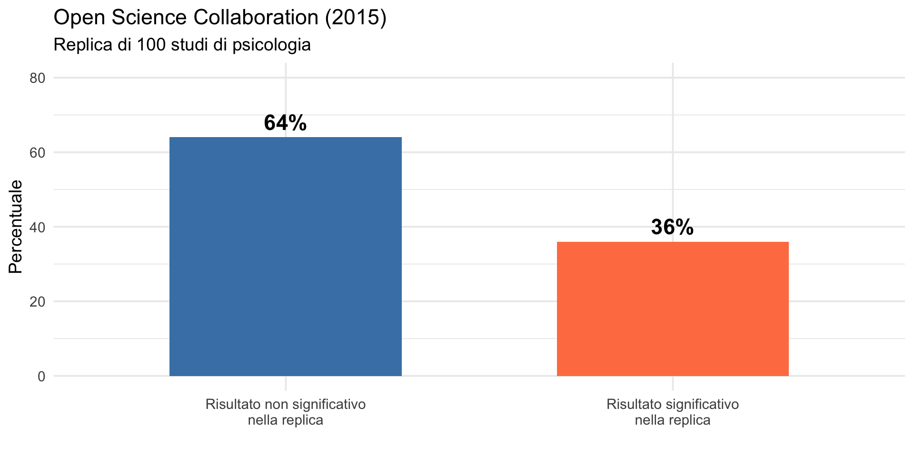
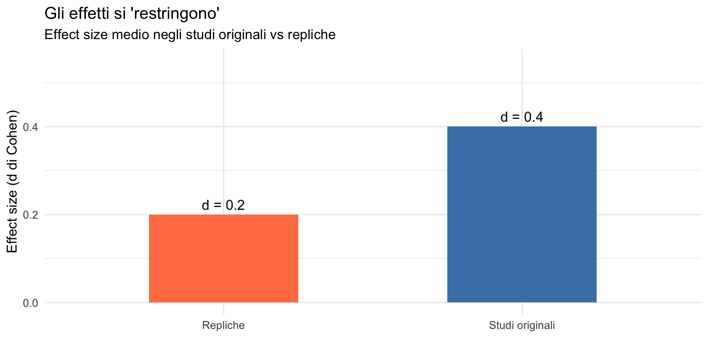
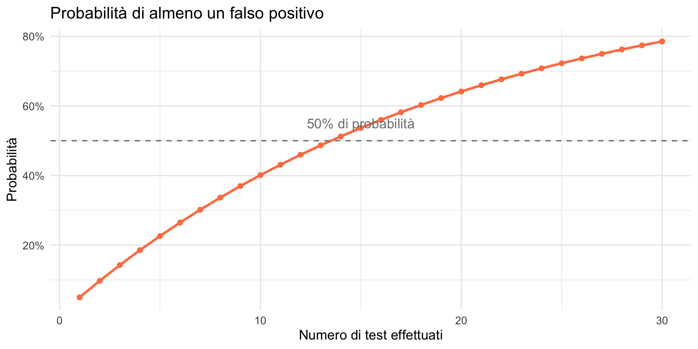
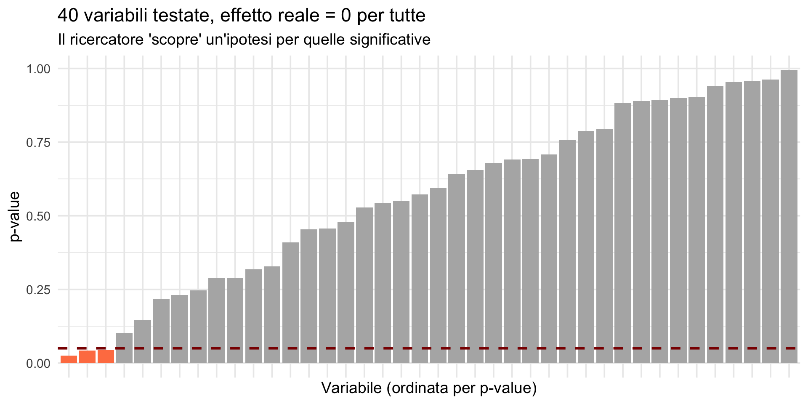
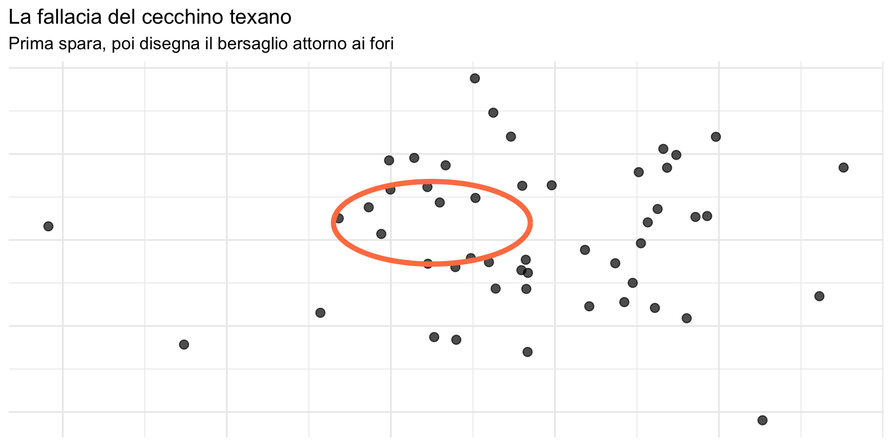
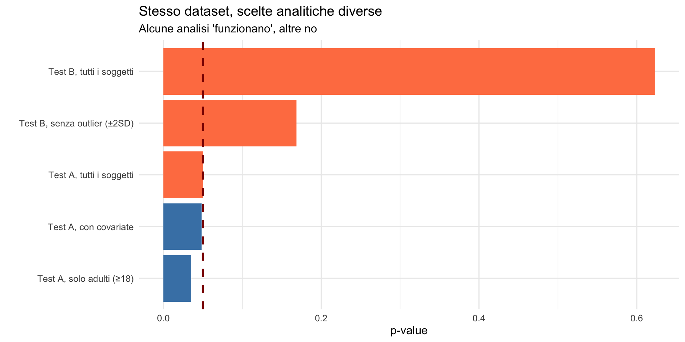

Dal laboratorio al mondo reale
Perché il sistema ha fallito — Segmento 1
![]()
29 ottobre 2026
Da dove veniamo e dove andiamo
Il modulo frequentista: il quadro completo
Nelle lezioni precedenti abbiamo costruito, pezzo per pezzo, gli strumenti dell’inferenza frequentista:
Lezione 14 — L’inversione logica: il frequentismo calcola \(P(\text{dati} \mid H_0)\) invece di \(P(H \mid \text{dati})\). La distribuzione campionaria e l’errore standard. L’intervallo di confidenza e le sue interpretazioni (errate).
Lezione 15 — Il valore-\(p\): cosa misura davvero. Errori di Tipo I e II, ma anche di Tipo S e M. La “maledizione del vincitore” con bassa potenza.
Oggi: il sistema ha fallito
Avete gli strumenti concettuali per capire perché il sistema ha fallito. L’inversione logica, la soglia arbitraria, i campioni piccoli e la maledizione del vincitore — non sono solo problemi astratti. Si sono combinati con pratiche di ricerca discutibili e incentivi perversi per produrre una letteratura scientifica in larga parte inaffidabile.
Questa è la lezione in cui tutti i pezzi si incastrano. Dopo oggi, saremo pronti per l’inferenza bayesiana — l’alternativa concettuale.
Obiettivi
- Comprendere la portata della crisi di replicabilità in psicologia.
- Identificare le cattive pratiche che l’hanno causata.
- Capire come il p-hacking distorce la letteratura.
- Riconoscere l’HARKing e il garden of forking paths.
- Collegare i problemi concettuali alle conseguenze empiriche.
Parte 1: la crisi di replicabilità
Un esperimento storico
Nel 2015, l’Open Science Collaboration ha tentato di replicare 100 studi pubblicati su tre prestigiose riviste di psicologia.
Il team includeva 270 ricercatori da tutto il mondo, con protocolli rigorosi e campioni adeguati.
I risultati

Non solo la significatività
Anche quando le repliche trovavano risultati significativi:

Gli effetti nelle repliche erano in media la metà di quelli originali.
Questo lo avevamo previsto
Ricordate la “maledizione del vincitore” dalla lezione precedente? Con bassa potenza, gli studi che raggiungono la significatività sono quelli in cui il rumore casuale ha gonfiato la stima (errore di Tipo M). Le repliche, condotte senza il filtro della significatività statistica (\(p < .05\)), producono stime più vicine all’effetto reale — e quindi più piccole.
Il dimezzamento degli effetti non è un mistero: è la conseguenza matematica che abbiamo illustrato con una simulazione. La crisi di replicabilità, in questo senso, era prevedibile.
Cosa significa “crisi”?
Non stiamo parlando di:
- qualche studio isolato che non si replica;
- gli errori occasionali di singoli ricercatori;
- i problemi di un sottocampo specifico.
Stiamo parlando di un problema sistemico che mette in discussione decenni di letteratura scientifica psicologica.
Altri dati allarmanti
Many Labs 1 (2014): 36 laboratori replicano 13 effetti classici:
- solo 10 su 13 si replicano in modo consistente.
Many Labs 3 (2016): 10 effetti “ben stabiliti”:
- solo 3 su 10 si replicano.
Registered Replication Reports: repliche pre-registrate di singoli effetti famosi:
- molti effetti “iconici” non si replicano o sono molto più piccoli.
Alcuni esempi celebri
| Effetto | Claim originale | Replica |
|---|---|---|
| Ego depletion | L’autocontrollo si esaurisce | \(d\) ≈ 0 |
| Power posing | Posture di potere aumentano il testosterone | Non si replica |
| Priming sociale | Parole sulla vecchiaia rallentano il cammino | Non si replica |
| Effetto Lady Macbeth | Senso di colpa → desiderio di lavarsi | Non si replica |
Questi erano effetti pubblicati su Science, su Psychological Science e su altre riviste prestigiose.
La domanda cruciale
Come è possibile che così tanti studi “rigorosi”, pubblicati su riviste prestigiose, con peer review, non replichino?
La risposta sta nelle pratiche di ricerca — non (solo) nella malafede. Nelle prossime sezioni vedremo tre meccanismi principali: il p-hacking, l’HARKing e il garden of forking paths.
Parte 2: il p-hacking
Cos’è il p-hacking?
Definizione
Il p-hacking consiste nel manipolare dati, analisi o procedure di raccolta dati fino a ottenere un valore-\(p\) inferiore a 0.05.
Non richiede falsificazione dei dati — è sufficiente la flessibilità nelle scelte analitiche del ricercatore.
Le forme del p-hacking
- Escludere selettivamente partecipanti o outlier.
- Aggiungere covariate finché \(p\) < .05.
- Testare più variabili dipendenti e riportare solo quella significativa.
- Fermare la raccolta dati appena \(p\) < .05.
- Trasformare variabili (log, radice quadrata) fino a ottenere la significatività.
- Dividere/unire gruppi in modi diversi.
Una simulazione: quanto è facile?
Simuliamo uno studio dove non c’è alcun effetto reale:
VD_1 VD_2 VD_3 VD_4 VD_5 VD_6
[1,] -0.56047565 -1.0678237 -0.6947070 0.3796395 0.005764186 -0.71040656
[2,] -0.23017749 -0.2179749 -0.2079173 -0.5023235 0.385280401 0.25688371
[3,] 1.55870831 -1.0260044 -1.2653964 -0.3332074 -0.370660032 -0.24669188
[4,] 0.07050839 -0.7288912 2.1689560 -1.0185754 0.644376549 -0.34754260
[5,] 0.12928774 -0.6250393 1.2079620 -1.0717912 -0.220486562 -0.95161857
[6,] 1.71506499 -1.6866933 -1.1231086 0.3035286 0.331781964 -0.04502772
VD_7 VD_8 VD_9 VD_10
[1,] 0.1176466 0.7017843 1.0527115 -1.0633261
[2,] -0.9474746 -0.2621975 -1.0491770 1.2631852
[3,] -0.4905574 -1.5721442 -1.2601552 -0.3496504
[4,] -0.2560922 -1.5146677 3.2410399 -0.8655129
[5,] 1.8438620 -1.6015362 -0.4168576 -0.2362796
[6,] -0.6519499 -0.5309065 0.2982276 -0.1971759 Variabile p_value Significativo
1 VD_1 0.767 No
2 VD_2 0.044 Sì
3 VD_3 0.604 No
4 VD_4 0.276 No
5 VD_5 0.749 No
6 VD_6 0.823 No
7 VD_7 0.776 No
8 VD_8 0.206 No
9 VD_9 0.621 No
10 VD_10 0.527 NoIl risultato
Variabili significative (p < .05): 1 su 10Probabilità attesa per caso (in media): 0.5 = 0.5Avviso
Anche in assenza di qualsiasi effetto reale, testando 10 variabili indipendenti si ha circa il 40% di probabilità di osservare almeno un risultato significativo (\(p\) < 0.05). La probabilità esatta è:
\[1 - (1 - 0.05)^{10} \approx 0.401\]
La matematica del p-hacking
Quando testiamo una sola ipotesi con \(\alpha = 0.05\), abbiamo il 5% di probabilità di ottenere un risultato “significativo” per puro caso. Questo è un falso positivo — l’errore di Tipo I che abbiamo studiato nella lezione scorsa.
La probabilità di non ottenere un falso positivo è semplicemente l’evento complementare:
\[ P(\text{nessun FP}) = 1 - 0.05 = 0.95. \]
Cosa succede se facciamo più test?
Supponiamo ora di testare k ipotesi indipendenti, tutte con \(\alpha = 0.05\).
Qual è la probabilità che nessuno dei test produca un falso positivo?
Se i test sono indipendenti, la probabilità che tutti e k i test non diano un FP è:
\[ P(\text{nessun FP in k test}) = (0.95)^k = (1 - 0.05)^k. \]
La probabilità di almeno un falso positivo
Poiché “nessun falso positivo” e “almeno un falso positivo” sono eventi complementari:
\[ P(\text{almeno un FP}) = 1 - (1 - 0.05)^k. \]
La probabilità di almeno un falso positivo (continuazione)
Questa formula mostra come il rischio si accumula rapidamente:
- \(k = 1\) → \(P = 5\%\)
- \(k = 5\) → \(P \approx 23\%\)
- \(k = 10\) → \(P \approx 40\%\)
- \(k = 20\) → \(P \approx 64\%\)
Con 20 test indipendenti, la probabilità di trovare almeno un falso positivo supera il 60% — anche se tutti gli effetti sono nulli.
Il collegamento con il p-hacking
Il p-hacking consiste nel provare molte analisi, molte variabili, molte trasformazioni.
Ogni tentativo aumenta \(k\), e quindi aumenta la probabilità di ottenere un risultato “significativo” per puro caso.
Un singolo test con \(\alpha = 0.05\) è controllato. Molti test senza correzione rendono il valore-\(p\) fuorviante (aumentano a dismisura la probabilità di ottenere un risultato “significativo” anche totale in assenza di effetti reali).

Simmons, Nelson & Simonsohn (2011)
Nel famoso paper “False-Positive Psychology”, gli autori dimostrano che con scelte analitiche “ragionevoli” si può ottenere \(p\) < .05 anche per effetti impossibili.
L’esperimento: dimostrare che ascoltare “When I’m Sixty-Four” dei Beatles ringiovanisce i partecipanti.
Risultato: \(p\) = .04.
Come hanno fatto?
Usando solo pratiche comuni e accettate:
- Raccogliere dati fino ad ottenere \(p\) < .05 o a raggiungere un \(n\) massimo.
- Includere 2-3 covariate “di controllo”.
- Testare 2-3 variabili dipendenti correlate.
- Escludere outlier con criteri post-hoc.
Nessuna frode, nessun dato inventato — solo flessibilità analitica.
I gradi di libertà del ricercatore
Researcher degrees of freedom
Ogni studio comporta decine di decisioni che potrebbero essere prese diversamente:
- come definire le variabili?
- quali partecipanti escludere?
- quali covariate includere?
- come gestire i dati mancanti?
- quale test statistico usare?
Ognuna di queste scelte può influenzare il valore-\(p\).
I gradi di libertà del ricercatore
La lezione precedente ci ha mostrato che il valore-\(p\) assume un’analisi completamente specificata prima di vedere i dati. Quando questa assunzione viene violata — anche in buona fede — l’interpretazione del valore-\(p\) perde validità.
Parte 3: HARKing
Cos’è l’HARKing?
Definizione
HARKing = Hypothesizing After the Results are Known
Presentare ipotesi formulate dopo aver visto i risultati come se fossero state fatte prima.
Un esempio
Cosa è successo realmente:
- Studio sull’effetto di \(X\) su \(Y\).
- \(X\) non ha effetto su \(Y\) (\(p\) = .34).
- Ma \(X\) ha effetto su \(Z\) (\(p\) = .02) — scoperto esplorando i dati.
- L’articolo riporta: “Abbiamo ipotizzato che \(X\) influenzi \(Z\)”.
Il problema
- L’ipotesi su \(Z\) non era pre-specificata.
- Testare più variabili aumenta i falsi positivi (la matematica che abbiamo appena visto).
- Il lettore pensa che fosse una predizione a priori — e valuta il \(p = .02\) come se fosse l’unico test effettuato.
Perché è problematico?

La logica distorta
Ragionamento corretto:
“Avevo la previsione \(A\). Ho testato \(A\). Ho trovato \(A\). Questo supporta la mia teoria.”
HARKing (Hypothesizing After Results are Known):
“Ho testato \(A\), \(B\), \(C\), \(D\). Ho trovato solo \(C\). Costruisco una teoria basandomi su \(C\) e presento il risultato come se l’avessi previsto.”
Il secondo caso non fornisce alcuna evidenza — è pura selezione a posteriori.
Un’analogia: il cecchino texano

Prima spara a caso sul fienile, poi disegna il bersaglio attorno al cluster di fori.
Parte 4: the garden of forking paths
Il giardino dei sentieri che si biforcano
Andrew Gelman ha coniato questa espressione (presa da Borges) per descrivere un problema più sottile del p-hacking intenzionale.
Garden of forking paths
Ad ogni bivio nell’analisi, il ricercatore fa una scelta. Ogni scelta influenza il risultato. Ma le scelte alternative non vengono considerate nel calcolo del valore-\(p\).
Un esempio concreto
Studio: l’effetto dell’umore sulla creatività
Scelte da fare:
- Come misurare la creatività? (Test A, Test B, combinazione?).
- Come misurare l’umore? (Scala X, Scala Y, item singoli?).
- Partecipanti sotto i 18 anni: includere o escludere?
- Outlier: definirli come ±2 SD, ±3 SD o con altri criteri?
- Covariate: includere età? genere? entrambi? nessuno?
Quanti percorsi sono possibili?
Se ogni scelta ha 3 opzioni, con 5 scelte abbiamo:
\[ 3^5 = 243 \text{ percorsi possibili}. \]
Ma il valore-\(p\) viene calcolato come se ci fosse un solo percorso predeterminato. Il valore-\(p\) di 0.05 “controlla” l’errore di Tipo I solo se l’analisi era completamente specificata prima di vedere i dati. Con 243 percorsi, il tasso di errore reale è enormemente più alto.
La differenza con il p-hacking
P-hacking (intenzionale):
“Ho provato 10 analisi diverse finché non ho trovato \(p\) < .05”
Garden of forking paths (non intenzionale):
“Ho fatto le scelte che mi sembravano ragionevoli, senza rendermi conto che avrei potuto scegliere diversamente”
Il secondo è più insidioso perché il ricercatore è in buona fede. Non ha “provato 10 analisi” — ne ha fatta una sola. Ma quella scelta è stata influenzata, consciamente o meno, dai dati stessi.
Visualizziamo il problema

Il problema fondamentale
Il valore-\(p\) assume che l’analisi sia completamente specificata prima di vedere i dati.
Ma nella pratica reale, molte scelte vengono fatte dopo avere visto i dati — consciamente o meno.
Questo invalida l’interpretazione del valore-\(p\) come “probabilità sotto \(H_0\)”.
Perché \(H_0\) è stata scelta dopo avere visto i dati (fallacia del cecchino texano).
Il garden of forking paths e l’approccio bayesiano
Nell’approccio bayesiano, il ricercatore deve specificare un modello e i prior prima dell’analisi. Questo non elimina completamente il problema — si possono scegliere prior a proprio vantaggio — ma la trasparenza richiesta dal framework bayesiano rende le scelte visibili e quindi criticabili.
Il garden of forking paths e l’approccio bayesiano
Inoltre, l’approccio bayesiano non dipende dalla nozione di “cosa sarebbe successo in esperimenti ipotetici con un’analisi predeterminata”. Produce una distribuzione a posteriori che è funzione solo dei dati osservati e del modello specificato — non dei percorsi analitici alternativi che si sarebbero potuti seguire.
Riepilogo della Parte 1
- La crisi di replicabilità è reale e documentata: circa il 60% degli studi non si replica.
- Il p-hacking (intenzionale o meno) aumenta drasticamente i falsi positivi.
- L’HARKing presenta risultati casuali come previsioni confermate.
- Il garden of forking paths mostra come anche i ricercatori in buona fede possano produrre risultati distorti.
- Il problema è sistemico, non attribuibile solo al singolo ricercatore.
Anticipazione
Nella seconda parte affronteremo:
- il publication bias e il “file drawer problem”;
- il ciclo vizioso che mantiene in vita il sistema;
- le soluzioni: Open Science e pre-registrazione;
- il ruolo complementare dell’approccio bayesiano.